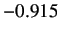
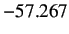
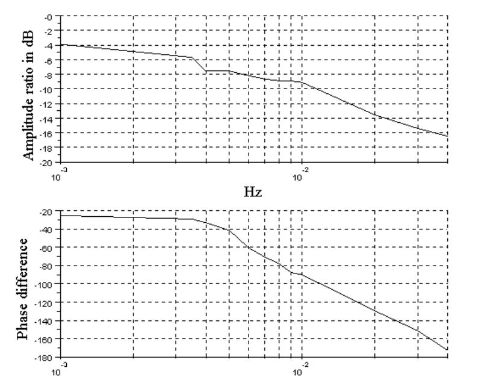

Now let us calculate amplitude ratio and phase difference.
- Download the Analysis folder from the sbhs website. It will be available under downloads section. Download the file for SBHS Analysis Code (local & virtual). The name of the file is scilab_codes_analysis. The download will be in zip format. Extrat the downloaded zip file. You will get a folder scilab_codes_analysis.
- Open the scilab_codes_analysis folder and then locate and open the folder Sine_Analysis.
- Copy the sine test data file to this folder.
- Change the Scilab working directory to Sine_Analysis
- Open the file sine-analysis.sce in scilab editor and enter the name of the data file (with extention) in the filename field.
- Put the value of frequency f for the calculation of amplitude ratio and phase difference and execute it. Here f means input frequency.
- Expect the values of amplitude ratio and phase difference on the scilab console.
Figure 4.4:
Amplitude ratio and Phase difference for local data file
 |
The results shown are for the data file sine-data-local.txt. It could be seen from figure 4.4 that the amplitude ratio turns out to be dB and phase difference to be °.
The plot thus obtained is shown in figure 4.5
Figure 4.5:
Plot of Input and Output vs time
 |
Figure 4.6:
Bode plot obtained from the plant
|  |
Repeat this calculation over a range of frequencies and note down the values of amplitude ratio in dB and phase difference.
Input these values for the appropriate frequencies into the Scilab code TFbode.sce and execute it to get a
Bode plot of the plant which is illustrated in figure 4.6.
Bode plot can be obtained directly from the plant's second order transfer function [2] with the help of Scilab code
TFbode.sce, as shown in figure 4.7. A visual comparison of the two Bode plots can be done to
validate the Bode diagram obtained from the plant.
Figure 4.7:
Bode plot obtained through plant's transfer function
 |
To compare the two plots, we plot it on the same graph as shown in figure 4.8
Figure 4.8:
Comparison of Bode plots
|
 |
rokade
2017-04-23